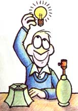

Here's a moneysaving idea that may prove to be an energy-saver as well!
I don't know about you, but some of my best ideas occur to me at the oddest moments. For instance, while sitting in my car as it idled in front of a stop signal not long ago, I suddenly realized that - in all my years of driving - I had seen only one burnt-out traffic light!
Now city folks may be able to boast a better "sighting" record, since I tend to stay clear of overinhabited places whenever I can.
Nevertheless, I have spent my share of time stopped at lighted intersections . . . and I've still witnessed only that one bad stoplight.
But, you may wonder, what is the point of this discussion? To state it simply, I've discovered a way to obtain secondhand light bulbs . . . free!
Traffic light crews, you see, are very efficient. They tend to change signal bulbs long before the units are expected to burn out. So all I had to do was find out what was done with the still-useful replaced lamps, and get my hands on a few of them.
Less than a week later, while driving through town, I found my answer. A workman stood on the corner, preparing to change the bulbs in a traffic signal. Recognizing the situation as a golden opportunity, I pulled over and asked about the fate of the bulbs. The man informed me that they were taken back to the city's administration offices and that - from there - people generally took them home . . . even though the bulbs were an odd size (69 watts).
The next thing I knew, he'd handed me a dozen half-used 69-watters! I drove away delighted . . . knowing I was helping to recycle used materials, and that I'd be saving energy by employing the lower-wattage units in my home.
And now perhaps you can tap into this source of "free" light, too. After all, aren't great ideas meant to be shared?
|
 |
|
|